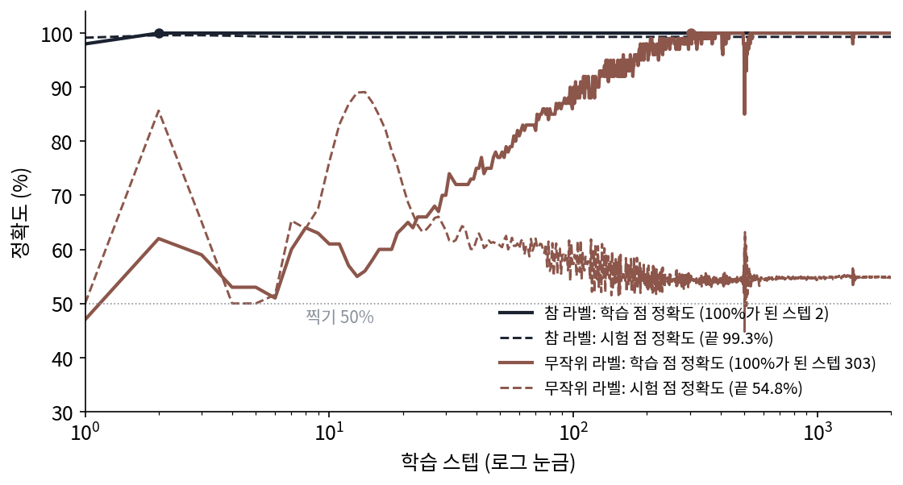
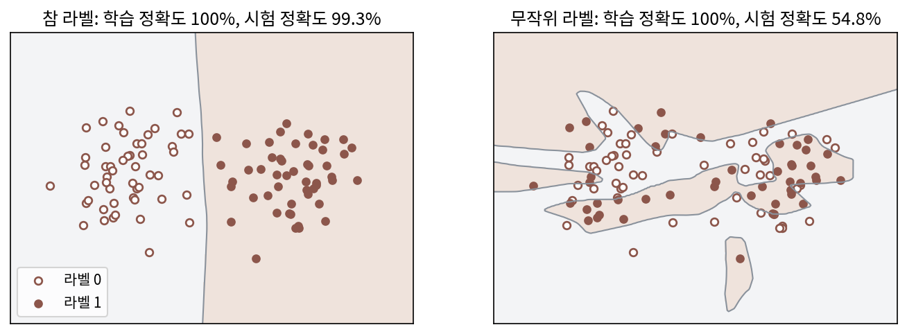
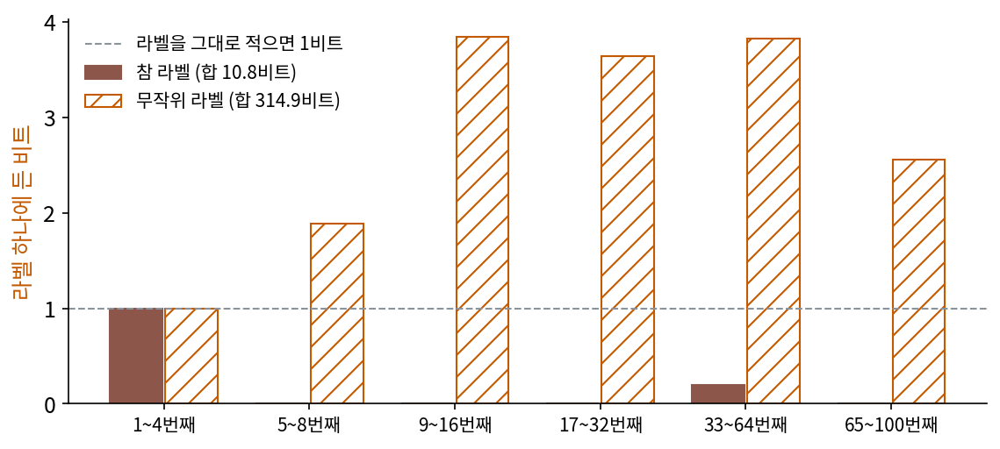
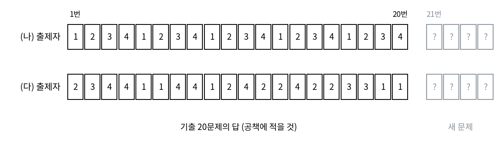
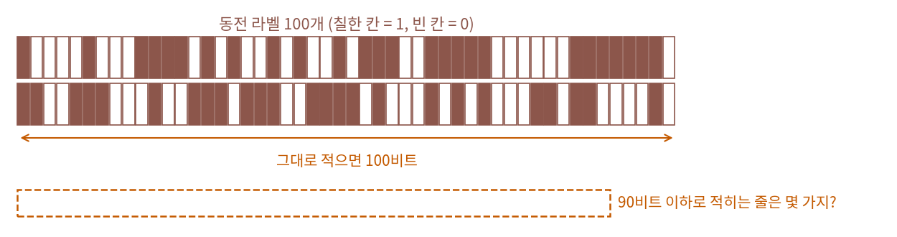
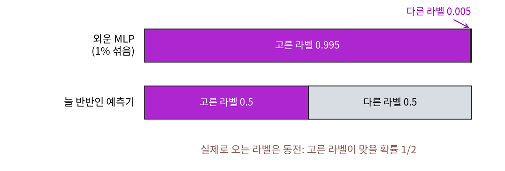

암기와 일반화: 일반화란 무엇인가
이 장의 물음
자료를 짧게 적을 수 있으면 규칙이 있다는 생각을 비트로 재 왔다. 예측기는 산술 코딩을 거쳐 그대로 압축기가 되었고, 최소 기술 길이는 예측기 자신을 적는 비트까지 셈에 넣어야 공평하다고 했다. 그런데 학습을 해 본 사람이 정말 궁금한 것은 비트가 아니라 처음 보는 자료인데, 학습 자료를 다 맞힌 모델이 시험 자료에서도 맞을지 학습 자료만 보고 알 수 있을까?
신경망을 학습시켜 본 사람은 학습 정확도가 100%에 닿는 장면을 흔히 보는데, 그때 시험 정확도는 높을 때도 있고 낮을 때도 있다. 같은 크기의 신경망, 같은 옵티마이저, 같은 스텝 수인데 결과가 갈린다. 그림 생성 모델도 비슷해서, 학습 그림이 적으면 학습 그림을 거의 그대로 다시 그리고, 많으면 처음 보는 그림을 그린다. 무엇이 둘을 가를까?
- 학습 자료를 모두 맞힌 두 모델 가운데 하나는 외웠고 하나는 규칙을 찾았다면, 어느 쪽이 외운 모델인지를 학습 자료만으로 잴 수 있을까?
- 「규칙을 찾았다」는 말을 비트로 적으면, 처음 보는 자료에 대해 무엇을 얼마나 보증할 수 있을까?
- 학습 자료가 몇 개일 때 생성 모델은 외우기를 멈추고 새것을 만들까? 그 경계는 무엇이 정할까?
암기: 외운 라벨은 줄어들지 않는다
시험 전날 기출문제 스무 개의 답 번호만 외운 친구와 풀이를 이해한 친구가 있다고 하자. 기출문제를 다시 내면 둘 다 100점이어서, 둘의 차이는 처음 보는 문제에서야 드러난다. 그런데 시험을 보기 전에, 두 친구의 공책만 보고 누가 외웠는지 알아낼 수는 없을까? 답 번호만 적힌 공책은 문제 수만큼 길고, 풀이를 이해한 친구의 공책에는 짧은 규칙 몇 줄이 있을 것이다. 외운 것과 규칙을 찾은 것이 공책의 길이로 갈린다면, 신경망도 「공책의 길이」로 가를 수 있을까?
역사: 아무 규칙도 없는 라벨까지 외운 신경망
2016년 말 장치위안(Chiyuan Zhang), 사미 벤지오(Samy Bengio), 모리츠 하르트(Moritz Hardt), 벤저민 레흐트(Benjamin Recht), 오리올 비냘스(Oriol Vinyals)는 그림 분류 자료 CIFAR-10의 라벨을 모두 무작위로 바꾼 뒤 평소 쓰는 합성곱 신경망을 학습시켰다. 신경망은 아무 규칙도 없는 라벨까지 학습 오차 0으로 맞혔고, 시험 정확도는 찍는 수준에 머물렀다. 그들은 라벨만이 아니라 그림 자체를 가우시안 노이즈로 바꿔도 신경망이 다 맞힌다는 것을 보였고, 파라미터가 자료 수보다 많기만 하면 층이 둘뿐인 신경망도 자료 n개에 어떤 라벨을 붙이든 모두 맞힐 수 있다는 것을 증명으로 보였다. 이 논문 「딥러닝을 이해하려면 일반화를 다시 생각해야 한다(Understanding Deep Learning Requires Rethinking Generalization)」는 2017년 국제 표현 학습 학회(ICLR)에 실렸다.
논문이 겨냥한 것은 「모델 족이 얼마나 많은 것을 맞힐 수 있는가」로 일반화를 설명하던 오랜 방식이었다. 같은 신경망이 참 라벨도 무작위 라벨도 다 맞힌다면, 신경망이 맞힐 수 있는 범위만 보아서는 왜 참 라벨에서만 처음 보는 그림이 맞는지 설명할 수 없다. 저자들은 4년 뒤 『Communications of the ACM』 2021년 3월호에 같은 실험과 그 뒤의 논의를 다시 정리해 실으면서 제목에 「아직도(still)」를 넣었다.
최적화 책이 「무엇을 고르나」를 묻는다면, 이 장은 같은 실험을 반대쪽에서 보아 고른 것이 정말로 학습 자료보다 짧은가를 비트로 잰다.


라벨을 섞고 다시 학습시키는 건 코드 몇 줄이잖아요. 이게 그렇게 큰 논문이었어요?

실험은 쉬웠어요. 어려웠던 건 결과를 설명하는 일이에요. 그때 일반화를 설명하던 잣대는 무엇을 쟀죠?

음, 모델 족이 얼마나 많은 것을 맞힐 수 있는가요. 맞힐 수 있는 게 적은데 학습 자료를 다 맞혔으면 우연이 아니니까, 처음 보는 자료도 맞을 거라는 논리일 것 같아요.

그 잣대로 CIFAR-10을 다 맞힌 신경망을 재면요?

아, 무작위 라벨까지 다 맞혔으니까 맞힐 수 있는 범위가 거의 전부예요. 그러면 참 라벨에서 시험 정확도가 높은 것도 그 잣대로는 설명이 안 되네요.

그래요. 파라미터가 자료 수보다 많으면 층이 둘뿐인 신경망도 아무 라벨이나 맞힌다는 증명까지 나왔으니, 모델 족을 보는 잣대는 신경망 앞에서 할 말이 없었어요. 4년 뒤 제목에 「아직도」를 넣은 것은 「왜 참 라벨에서만 처음 보는 그림이 맞나」라는 물음이 그때도 닫히지 않았다는 뜻이고요.

족 전체 말고 학습이 실제로 고른 모델 하나를 재면 되지 않아요? 그런데 고른 모델이 규칙을 찾았는지 외웠는지를, 시험 자료 없이 학습 자료만 보고 어떻게 재죠?
두 클러스터, 두 가지 라벨
실험을 손에 잡히게 줄여 보자. 평면 위에 클러스터(한 중심 근처에 흩어진 점들의 모임) 둘을 둔다. 한 클러스터는 (−1.5, 0), 다른 클러스터는 (1.5, 0) 근처에 표준편차 0.6으로 흩어져 있고, 왼쪽 클러스터의 점은 라벨 0, 오른쪽 클러스터의 점은 라벨 1이다. 평면을 고른 것은 신경망이 그은 경계를 눈으로 볼 수 있기 때문이다. 학습 점 100개(클러스터마다 50개)와 시험 점 2,000개를 따로 뽑고, 학습 점의 라벨은 두 벌 만든다. 한 벌은 클러스터를 따른 참 라벨이고, 다른 한 벌은 점마다 동전을 던져 붙인 무작위 라벨이다. 무작위 라벨 100개 가운데 57개는 우연히 참 라벨과 같았다.
두 벌에 같은 작은 MLP(층마다 모든 칸이 다음 층의 모든 칸과 이어진 신경망. 입력 2칸 → 128 → 128 → 출력 2칸, 파라미터 17,154개)를 같은 방법으로 학습시킨다. Adam(학습률 0.01)으로 학습 점 100개 전부를 한 묶음으로 2,000스텝이다(계산은 sources/memorization/s1_labels.py).
| 라벨 | 10스텝 뒤 학습 정확도 | 300스텝 뒤 학습 정확도 | 2,000스텝 뒤 학습 정확도 | 시험 정확도 | 파라미터 수 |
|---|---|---|---|---|---|
| 참 라벨 | 100% | 100% | 100% | 99.3% | 17,154 |
| 무작위 라벨 | 61.0% | 99.0% | 100% | 54.8% | 17,154 |

두 모델은 학습 자료에서 똑같이 완벽하고 파라미터 수도 같다. 시험 정확도는 시험 점의 참 라벨과 견준 값이라, 무작위 라벨을 외운 모델은 찍기 수준에 가깝다(학습 라벨 57개가 우연히 참 라벨과 같았던 만큼 50%보다 조금 높다). 학습이 걸린 시간은 다르지만, 스텝 수를 넉넉히 주면 학습 속도의 차이도 사라지므로, 시험 자료를 보지 않고 두 모델을 가를 잣대가 따로 필요하다.
순차 코드로 라벨의 비트를 재기
최소 기술 길이에서 쓴 순차 코드를 다시 꺼낸다. 앞의 자료로 배운 모델로 다음 자료를 적는 비트를 차례로 더해 가는 이 방법은, 받는 사람도 같은 학습법으로 같은 모델을 다시 만들 수 있으므로 모델을 적는 비트를 따로 셀 필요가 없다는 장점이 있다.
여기서 적을 것은 라벨이고, 점의 위치는 보내는 사람과 받는 사람이 모두 안다고 둔다. 학습 점 100개를 정해진 순서로 늘어놓고 1~4번째, 5~8번째, 9~16번째, 17~32번째, 33~64번째, 65~100번째의 여섯 묶음으로 자른다. 첫 묶음의 라벨은 아무것도 배우지 않았으니 1비트씩 적는다. 그다음 묶음부터는 앞 묶음까지의 점으로 MLP를 처음부터 새로 학습시켜(같은 2,000스텝), 그 MLP가 다음 묶음의 라벨에 준 확률 q로 −log₂ q비트씩 적는다. 자신 있게 틀린 라벨 하나에 끝없는 비트가 들지 않게, MLP의 확률에 고른 확률을 1% 섞는다. 그러면 라벨 하나에 드는 비트는 많아야 −log₂ 0.005 = 7.64비트다.
참 라벨은 첫 묶음 4비트를 쓰고 나면 거의 비트가 들지 않는다. 점 네 개만 보고 배운 MLP도 두 클러스터 사이의 경계를 대강 알아, 다음 라벨에 0.99 넘는 확률을 준다. 33~64번째 묶음에서 한 번 크게 놀란 것까지 더해 합은 10.8비트, 라벨 하나에 0.108비트다. 무작위 라벨에서는 앞 묶음이 다음 묶음에 대해 알려 주는 것이 없다. 앞의 라벨을 외운 MLP는 다음 라벨도 자신 있게 예측하는데, 그 예측은 동전과 상관이 없다. 둘째 묶음부터 라벨 하나에 1.9~3.8비트가 들어 합은 314.9비트다. 라벨 100개를 아무 모델 없이 1비트씩 그대로 적으면 100비트이니, 무작위 라벨을 외운 모델은 라벨을 줄이기는커녕 세 배로 늘렸다.

이렇게 학습 자료를 규칙으로 줄이지 않고 룩업 테이블처럼 하나하나 지니는 것을 암기 (룩업 테이블처럼 외우기, memorization)라 한다. 무작위 라벨을 다 맞힌 MLP의 속은 점마다 라벨을 적어 둔 표와 다르지 않다. 표는 처음 보는 점에 대해 아무것도 말해 주지 않고, 표로 다음 라벨을 맞히려 하면 순차 코드의 비트가 줄지 않는다. L순차 = 10.8비트와 314.9비트의 차이는 시험 점을 한 번도 쓰지 않고 학습 자료만으로 잰 것이다.
ML에서: 언어 모델이 외운 문장
큰 언어 모델에도 룩업 테이블처럼 지닌 부분이 있다. 칼리니(Nicholas Carlini)와 동료 열한 명은 「큰 언어 모델에서 학습 자료 뽑아내기(Extracting Training Data from Large Language Models)」(USENIX Security 2021)를 썼다. 그들은 공개 웹 글로 학습한 GPT-2에 질의만 해서 학습 자료의 문장 수백 개를 글자 그대로 뽑아냈다. 뽑힌 것에는 이름, 전화번호, 전자우편 주소 같은 개인 정보와 코드, 128비트짜리 무작위 식별자(UUID)가 있었는데, 무작위 식별자는 규칙이 없어 외우지 않고서는 내놓을 수 없는 글이다. 학습 자료에서 한 문서에만 나온 문장도 뽑혔고, 큰 모델일수록 더 많이 외웠다.
문제 1. 기출문제 답 스무 개
사지선다 기출문제 스무 개의 답 번호를 공책에 적는다. (가) 답 번호를 하나씩 그대로 적으면 몇 비트인가? (나) 출제자가 답을 1, 2, 3, 4, 1, 2, 3, 4 … 차례로 냈다면, 공책에 적을 것은 무엇이고 몇 비트쯤인가? (다) 출제자가 답을 주사위처럼 무작위로 냈다면, 답만 외운 학생은 같은 출제자의 새 문제 스무 개에서 평균 몇 개를 맞히겠는가? (나)의 출제자라면?

(가)는 답 하나가 넷 중 하나니까 2비트, 스무 개면 40비트요.
(나)는요? 공책에 무엇을 적으면 받는 사람이 스무 개를 다 되살릴 수 있을까요?
「1, 2, 3, 4를 되풀이」라고만 적으면 돼요. 몇 비트인지는… 규칙 하나 고르는 데 몇 비트쯤이요.

받는 사람과 「되풀이 규칙」 몇 가지를 미리 정해 뒀다면 그 가운데 하나를 가리키는 비트면 되지. 40비트보다 훨씬 짧아.
(다)는요? 답만 외운 학생이 새 문제를 받으면요?
외운 건 기출 답이니까 새 문제에는 쓸 데가 없네요. 찍는 거랑 같아서 스무 개 중 5개요.

(나)의 출제자라면 규칙을 아는 학생은 21번부터도 1, 2, 3, 4로 이어서 다 맞혀. 공책이 짧게 줄어드는 경우에만 새 문제에 쓸 수 있는 거네. 무작위로 낸 답은 40비트 아래로 줄일 수도 없고, 새 문제에 쓸 수도 없어.

조교님이 작년 숙제 답안을 그대로 외워 온 사람은 올해 숫자만 바뀐 숙제에서 바로 티가 난다고 했어요.
문제 2. 동전 라벨 100개는 줄일 수 없다
동전을 100번 던져 얻은 라벨 100개(0 또는 1)를 프리픽스 코드로 적는다. (가) 100비트짜리 줄은 모두 몇 가지인가? (나) 길이가 90비트 이하인 코드워드는 모두 몇 개를 넘을 수 없는가? (다) 아무리 영리한 압축기를 써도, 동전 라벨 100개가 90비트 이하로 줄어들 확률은 얼마를 넘지 못하는가?

신경망이 충분히 크면 무작위 라벨도 다 외우잖아요. 외운 신경망으로 적으면 줄어들지 않을까요?
줄어든다는 말을 셈으로 바꿔 볼까요? 100비트짜리 줄은 몇 가지죠?
2¹⁰⁰가지요.
그럼 90비트 이하의 코드워드는 모두 몇 개까지 있을 수 있죠?
길이 0인 것 1개, 길이 1인 것 2개, … 길이 0부터 90까지 다 더해도 2⁹¹ − 1개예요.

그게 라벨이 줄어드는 거랑 무슨 상관이야?
코드워드 하나가 줄 하나만 가리킬 수 있잖아. 그러니까 90비트 이하로 줄어드는 줄은 많아야 2⁹¹ − 1가지야.
동전 라벨은 2¹⁰⁰가지가 다 똑같이 나올 수 있으니까, 줄어들 확률은 많아야 2⁹¹/2¹⁰⁰ = 2⁻⁹ = 1/512, 0.2%예요. 압축기가 얼마나 영리한지와 상관이 없어요.

그럼 외운 신경망은요?
순차 코드로 재면 그 신경망은 라벨을 314.9비트로 적었어요. 100비트보다 길죠. 외운 것을 받는 사람에 알려 주려면 결국 신경망의 파라미터에 라벨이 들어가 있어야 하고, 방금 센 대로, 그 파라미터를 적는 비트가 라벨 100비트보다 훨씬 짧을 확률은 아주 작아요. 신경망이 다 맞힌다는 것과 짧게 적는다는 것은 다른 일이에요.

정수론 시간에 비둘기집 원리로 「모든 수를 더 짧게 적는 방법은 없다」를 증명한 적이 있어요. 짧은 이름은 몇 개 없으니까 대부분의 수는 짧은 이름을 못 받아요.
문제 3. 자신 있게 외운 모델의 비트
순차 코드에서 무작위 라벨을 외운 MLP는 다음 묶음의 라벨에도 거의 1에 가까운 확률을 준다. 이 장의 실험처럼 고른 확률을 1% 섞으면, 자신이 고른 라벨에 0.995, 다른 라벨에 0.005를 준다. (가) 맞혔을 때와 틀렸을 때 라벨 하나에 드는 비트는 각각 얼마인가? (나) 동전 라벨이라 맞힐 확률이 반이면 라벨 하나에 평균 몇 비트인가? 실험에서 9~16번째 묶음의 3.84비트와 비교해 보라. (다) 늘 반반을 주는 예측기와 비교하면? 섞는 비율을 0으로 하면 어떻게 되는가?

−log₂ 0.995 = 0.0072비트, −log₂ 0.005 = 7.644비트요. 반반이면 (0.0072 + 7.644)/2 = 3.826비트. 실험의 3.84랑 거의 같네요.
늘 0.5를 주는 예측기는요?

맞든 틀리든 1비트요. 아무것도 안 배운 예측기가 외운 신경망보다 네 배 가까이 짧아요. 이상한데요?
자신 있게 틀리는 값이 너무 비싸서 그래. 맞힐 때 아끼는 건 1비트에서 0.0072비트로 1비트도 안 되는데, 틀릴 때는 7.6비트를 내야 하잖아.
그럼 섞는 비율을 0으로 하면요?

틀린 라벨에 준 확률이 거의 0이 되니까 −log₂가 끝없이 커져요. 그래서 섞었던 거군요. 섞는 비율을 어떻게 정해도, 동전 라벨에서는 평균 1비트 아래로 내려갈 수 없고요.
모르는 문제에 확신을 갖고 답을 쓰면 감점하는 시험이 있었는데, 그럴 땐 「모르겠다」고 쓰는 게 점수가 높았어요. 반반이 그 「모르겠다」네요.